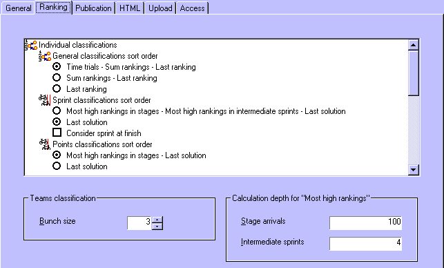

Through in the menu, and then choosing for the Ranking tab, you can edit the settings that determine how rules are applied for generating classifications.
When the small size of the settings control holds you back from properly making the settings, you can maximize the control in which you make these settings, by double-clicking on any whitespace in the control.

The following ranking settings can be made.
You can set the way how classifications are sorted, for general classifications, sprint classifications, points classifications, climbing classifications. You can also set the last solution that must be used for draws in several of the classifications, between the last stage ranking and the last general classification.
Specifically for sprint classifications you can choose whether the sprint at the stage finish should be considered while calculating the general classifications and if the points that are obtained at the stage finish should be listed explicitly.
Specifically for climbing classifications you can choose whether the difference in categories should be considered while calculating the general classifications.
For the sprint classifications, points classifications, climbing classifications and most aggressive classifications you can choose to exclude competitors with time cuts from their general classifications.
You can choose to generate general classifications that are sorted on start no. rather than on rank.
You can enable the generation of teams classifications and set the way how general teams classifications and stage teams classifications are sorted. Also you can select how the involved bunch of competitors is obtained between from times (2.6.016) or from rankings, and which competitor's ranking must be used as the last solution for draws ("deciding competitor") in the general teams classification (first of last of the bunch).
The bunch size for teams classifications can be entered as a value of at least 2 and at most
The rank (depth) up to which "Most high rankings" calculations must be done; this way making a trade-off between calculation speed and accuracy. However, when the number set for Stage arrivals is larger than the last ranking that you expect (normally the number of competitors in the race), and the number set for Intermediate sprints is larger than the maximum amount of points that is awarded for any involved sprint, you have optimal accuracy guaranteed. Use a depth of 1 to only consider the actual winner rather than also involving additional places in the calculation (2.6.017).